An example usage of the OpenLink ODBC Bench Utility
| Preparation
|
|
| Getting started
|
|
| Configuring the Test
|
|
| Running the Test
|
|
| Working with the Results
|
Before the OpenLink ODBC Bench can be used for a test, the following need to be setup:
Server end is configured and running.
Valid Client side Data Source Name configured.
Once you have started the Program, you will be presented with the main window from where all your tests will run. This window will look something like this:
 |
The program will start with a new test. To clear any existing work, use the "File New" menu item.
| 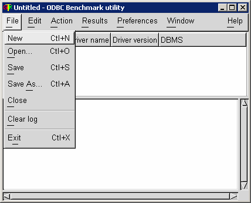 |
Once you have a Data Source Name (DSN) configured and ready for use, a connection to the database using OpenLink ODBC Bench can be made. Using the “Edit” drop down menu select “New Benchmark Item”, this will create a new item with which you can connect you DSN.
Here you can set the name of benchmark item and to what TPC specification you want to run your bench test against, for this example we will be using TPC-A. Then click OK.
| 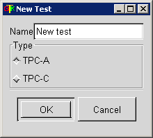 |
The TPC is a Benchmark specification, which can be used to verify the integrity of a bench result set. For more details you can visit the TPC website here you can find out more about the different TPC Specifications.
Once you have created you benchmark item, you should notice that this has been listed in the upper half of the OpenLink ODBC Bench’s dialogue window.
| 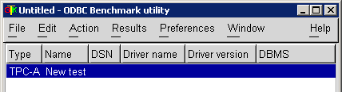 |
Now you need to associate the DSN with this item. From the “Edit” drop down menu you will want to select “Login details”.
| 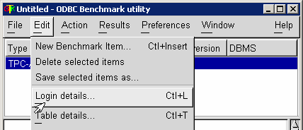 |
This will present you with the following window:
| 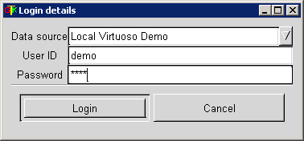 |
From the drop down DSN picklist, you will want to select the DSN that you want to use, for this example here we will be using a Virtuoso DSN, here you can also set your Username (UID) and Password (PWD). Note that the Password will be masked.
Once you have chosen the DSN, and set the login details, click the “Login” button to set the connection.
| 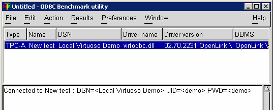 |
You should now have your connection through OpenLink ODBC Bench established. The screen will report the details about the sucessful connection. If it reports an error, then double check the DSN settings. Alternatively ensure that your UID and PWD are correct, and that the Caps Lock has not been accidentally enabled.
You should receive some indication that you have established your connection to your database from the following information that is displayed in the OpenLink ODBC Benchmark utilities dialogue boxes.
Now that you have a connection you need to create a few tables in the database, it is these tables that the benchmark will run against.
To create these tables use the “Edit” tab once again and select “Table details”.
| 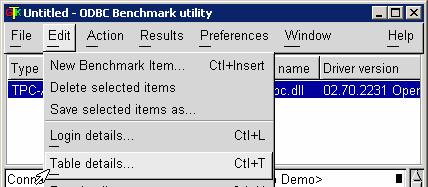 |
You will then be presented with the below window, it is here that you will configure the table details. Generally the default values should suffice.
| 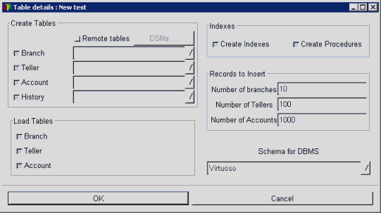 |
Note that the “Schema for DBMS” is normally set automatically. However if it is set to manuall, then make sure the appropriate database scheme is chosen.
Once you are happy with the “Table Details” click on “Ok” to proceed. At this stage you have only set the “Table Details” you still need to create the tables.
To actually create the tables use the “Action” menu and select “Create tables & procedures” this will run the settings you specified from the previous step and create the tables required.
| 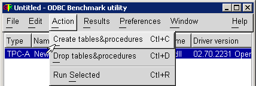 |
You will probably see a few windows flash up on the screen, depending on the speed of you machine and database connection, this is merely status information of the tables being created and populated.
| 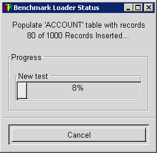 |
Here is an example of the windows you see whilst the tables are being created and populated. You will receive a window for each table, this example is the ACCOUNT table, displaying the loading status.
When all the table information has been stored you will be notified in the lower half of the OpenLink ODBC Bench dialogue window.
| 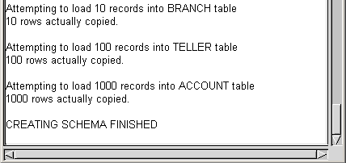 |
As you can see in main dialogue box you should have a history of all activity since the application was started.
Currently this should show that you have successfully completed creating the schema as specified.
Now you should be ready to run the benchmark against your database, at this stage you may want to go back and double check everything to ensure that you have not missed anything vital.
You need to configure the Benchmark parameters firstly, to do this access the “Edit” tab, then “Run Details”. This will spawn the main OpenLink ODBC Bench configuration window.
| 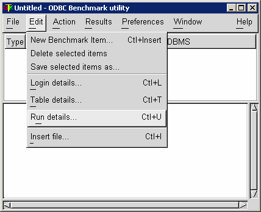 |
The “Run Details” configuration window should look as below.
| 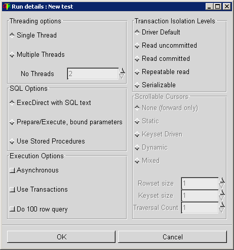 |
Here you can set the Threading options to either run at Single Thread or Multiple Threads, if you choose multiple threads you can also set the number of threads you wish to run in the “No. Threads” caption.
| 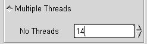 |
SQL Options, this allows you to choose through which method the database receives it’s SQL Statements whether from direct executed SQL Text, prepared then executed with bound parameters or using stored procedures.
Execution Options, here you can set the method of executing the Statements against the database. If you choose transactions you can also set the Transaction Isolation Levels from the Transaction Isolation Levels section.
Notice that the Scrollable Cursors section is grayed out, you can only set this section if you are using the “Do 100 row query”, you can then select what type of cursor you want to use. All these settings should be configured to reflect the type of benchmark you want to run, for your specific need and requirements. However for this particular example the defaults will be used. Once you are happy with your configuration click “Ok” to proceed.
You need to access the Action tab and then select the “Run Selected” option. Note in order to run the selected, you need to ensure that you have selected the Item you want to run.
| 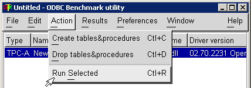 |
Once you click on “run selected” you will be presented with the Run Duration window. Here you can set the duration for each test to run.
| 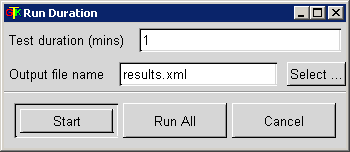 |
You can choose to have the test output directly into a “XML” file by providing a filename and location, click the “select …” button for location properties.
| 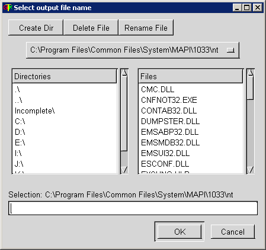 |
Then click on “Start” to run the benchmark. If you choose to “Run All” then rather then running the particularly specified test it should run all possible tests, note that this can be very time consuming and also CPU intensive.
The Benchmark should now be running providing you with a status window so you can watch the progression of each test as it is run.
| 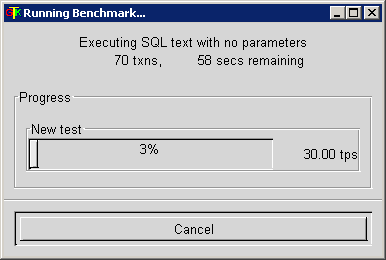 |
| 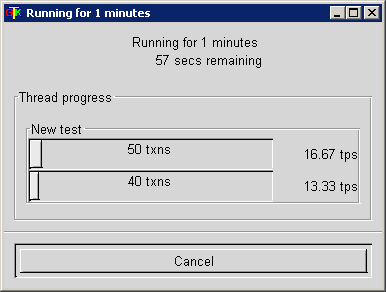 |
Note that you can stop the tests being run at any time using the “cancel” button
When you benchmark as completed you will have all the results in the main dialogue box or alternatively in the XML file you specified earlier.
| 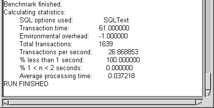 |
Another alternative for storing the results information is to have it directly written into a database, using the “Results” tab select “connect” this will present you with the login window as specified earlier, then select the DSN you want to use, provide the login details and then click “Ok”.
| 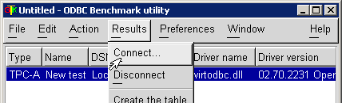 |
| 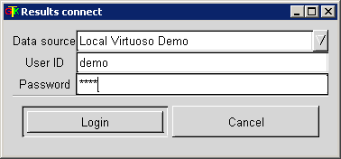 |
Once you have the connection click the “Results” tab again and selecting the “Create the Table” option, this will create a results table, which will store all the Benchmarks test output information.
| 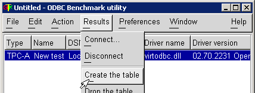 |
As you have completed your Bench test you may want to save your specific “Benchmark Item” to use again at a later date. To do this select the “Edit” menu and select “Save selected item as…” this will then spawn a directory listing type window, in which you can specify a location and name of the “Item” to be saved.
| 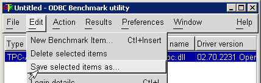 |
Your benchmark as now been completed using the basic outline of the Application, you should now be confident enough to be able to experiment with the different settings and increase your experience with the OpenLink ODBC Benchmark Utility.